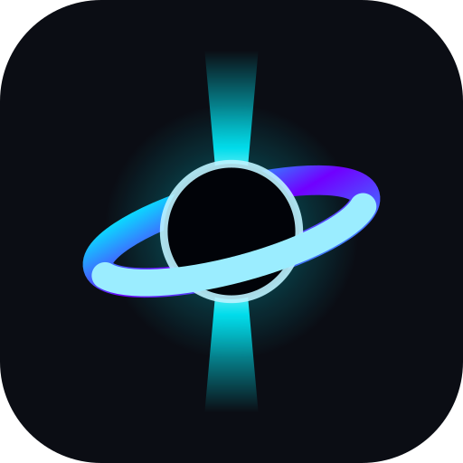

Pair this device
Follow and answer your Houston panes from here.
- 1On the computer running Houston, open Settings ▸ Remote access.
- 2Choose Pair a device, then scan the code or open its link on this device.
- 3Name this device and confirm.

Follow and answer your Houston panes from here.
Not encrypted: this connection uses HTTP.
No panes are open
Panes you start in Houston appear here.
No activity yet
Prompts, replies and requests appear here as the agent reports them. Older output is in View screen.